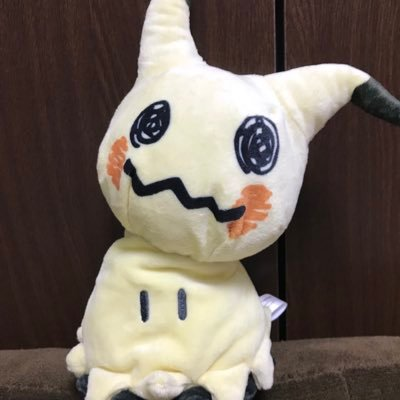

|  |
|
Daiki Tanaka
Freelance Engineer
Currently Job Hunting
E-mail: daiki7272tanaka (at) gmail.com
[GitHub][Google Scholar]
|
Research Interests
Computer Vision, Machine Learning.
Education
- M.S., (Apr. 2018 - Mar. 2021)
- Department of Information and Communication Engineering,
Graduate School of Information Science and Technology,
The University of Tokyo.
Advisor: Prof. Kiyoharu Aizawa
- B.E., (Apr. 2017 - Mar. 2018)
- Department of Information and Communication Engineering,
The University of Tokyo.
Advisor: Prof. Kiyoharu Aizawa and Prof. Toshihiko Yamasaki
Work Experience
- Programmer, (Apr. 2021 - Oct. 2022)
-
ML team, AI section, R&D, GAME FREAK inc.
- AI R&D Engineer, (Apr. 2024 - Feb. 2025)
-
R&D, CASTALK Co., Ltd..
Research Experience
- Research Intern, (Aug. 2018 - Sep. 2018)
-
CV team, Preferred Networks.
Mentor: Yasunori Kudo, and Takashi Abe
Research on object detection and image recognition
Publications
International conferences
- Daiki Tanaka, Daiki Ikami, Toshihiko Yamasaki, and Kiyoharu Aizawa
Joint Optimization Framework for Learning with Noisy Labels
CVPR, 2018. [arXiv] [pdf] [code]
Domestic conferences
Awards
- IEICE Academic Encouragement Award, The Institute of Electronics, Information and Communication Engineers General Conference, 2018
- The Best Master Thesis Award, Department of Information and Communication Engineering, Graduate School of Information Science and Technology, The University of Tokyo, 2021
Invited Talks
- Joint Optimization Framework for Learning with Noisy Labels
Meeting on Image Recognition and Understanding, in Sapporo, Japan, Aug. 2018.
Funding Sources
- Toyota/Dwango Scholarship for Advanced Artificial Intelligence Researcher, Apr. 2018 - Mar. 2019